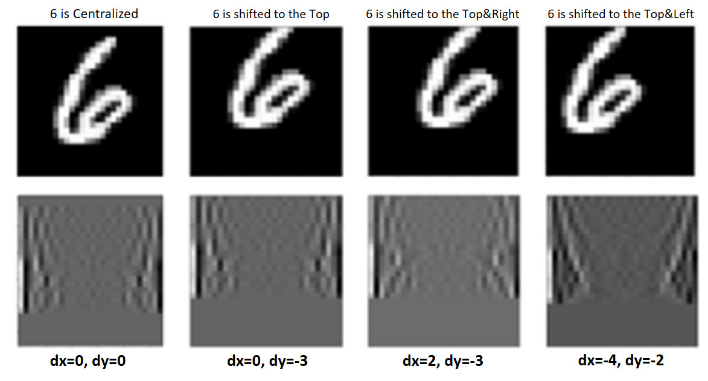
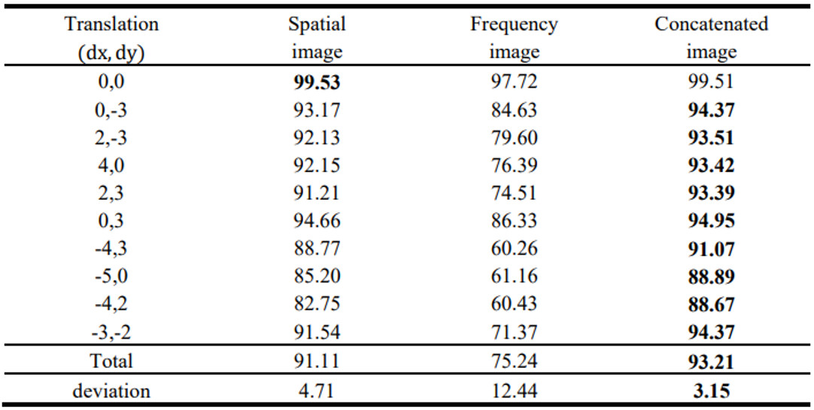

Extending Input Channel Using Fourier Fast Transformation for Convolutional Neural Networks
Classification improvement
All digits are centralized in MNIST. When a digit is displaced from the center, it leads to a decrease in accuracy. However, The Fast Fourier Transform (FFT) can generate images with similar frequency characteristics from both centered and shifted images (as shown in Figure 1). The goal of that research was to improve classification results. To improve the result, the "Concatenated" images' dataset will be trained instead of Spatial or Frequency images. To produce "Concatenated" images, Channels of Spatial and Frequency images will be joined (Figure 2). After training "Concatenated" images, accurate results will be much better than Spatial and frequency images as indicated in Table 1.
Figure 1. Spatial and Frequency forms of number 6
- Features:
- - MNIST dataset
- - Fast Fourier Transform
- - Concatination.
- - Classification.
- - etc.
Figure 2. Converting Spatial image to Frequency, and Concatnating channels of Spatial and Frequency images
Table 1. Accuracy results of Spatial, Frequency and Concatinated images